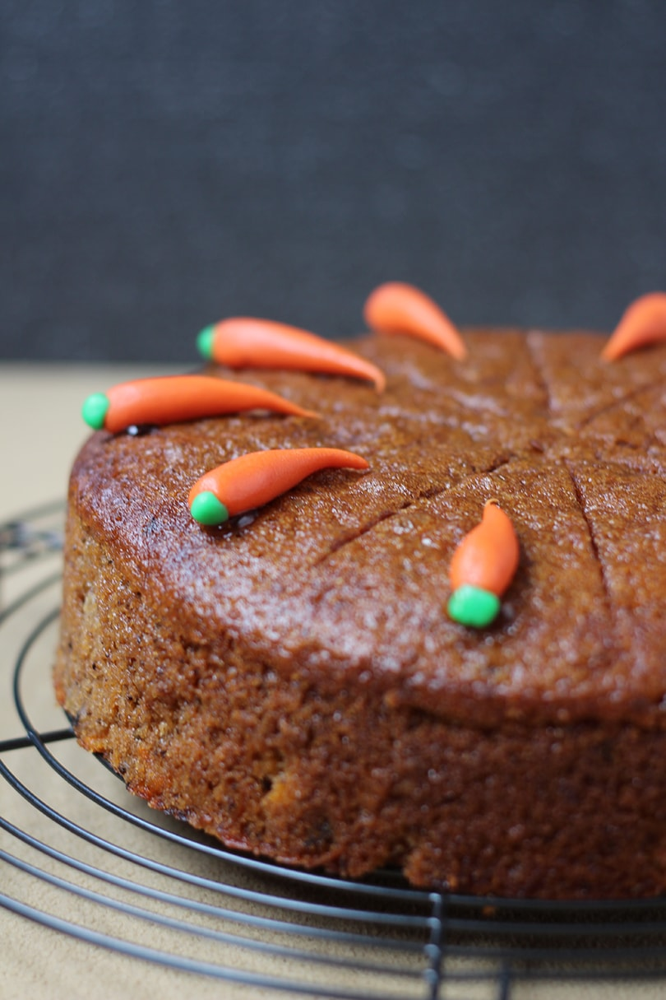

Carrot Cake

Description
An easy homemade Carrot Cake recipe for a super moist cake made from
scratch. This traditional carrot cake is tender and perfectly spiced, with
balanced sweetness. This southern carrot cake recipe is sinfully
delicious.
This cake is perfectly spiced, light and moist. The thing I really love
about this recipe is how easy it is to make. The last thing I want to do
in summer in the south is bake a cake that requires a lot of work. This
cake — doesn't require a lot of work, it's great to toss in the oven with
dinner. This recipe has everything I look for in a good cake. It's moist,
has great texture and has a wonderful balance of sweetness and spices.
Ingredients
- 4 eggs
- 2 cup granulated sugar
- 3 cup grated carrots
- 2 cup flour
- 1 cup vegetable oil
- 1 teaspoon baking powder
- 1 1/2 teaspoons vanilla extract
- 2 teaspoons cinnamon
- 1/2 cup walnuts (chopped, optional)
Steps
- Preheat oven to 350 degrees F.
- Prepare cake pan by greasing it with butter.
-
In a medium bowl fitted with a mixer, combine sugar and eggs and mix on
medium/low for 4-5 minutes.
- Add flour, baking powder and cinnamon and mix for 1-2 minutes.
- Add thinly shredded carrots and walnuts and stir by hand.
-
Pour in cake pan and bake for 30-35 minutes or until center of cake
comes out clean when a toothpick is inserted into the center.
- Allow cake to cool before removing from pans.